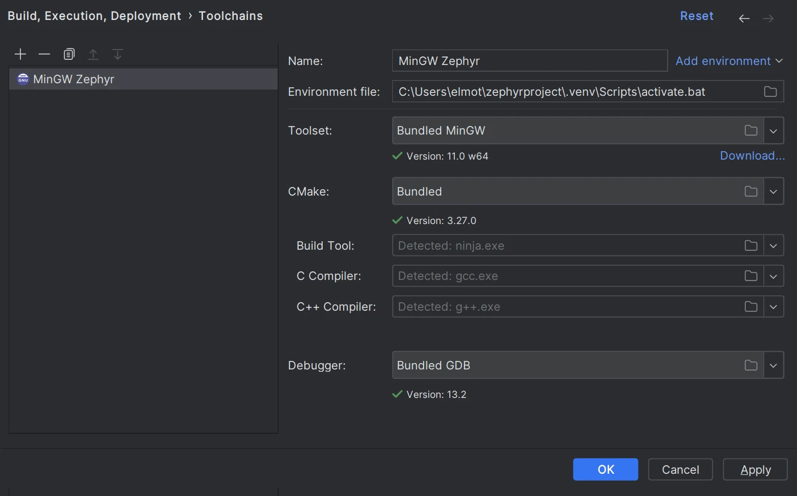
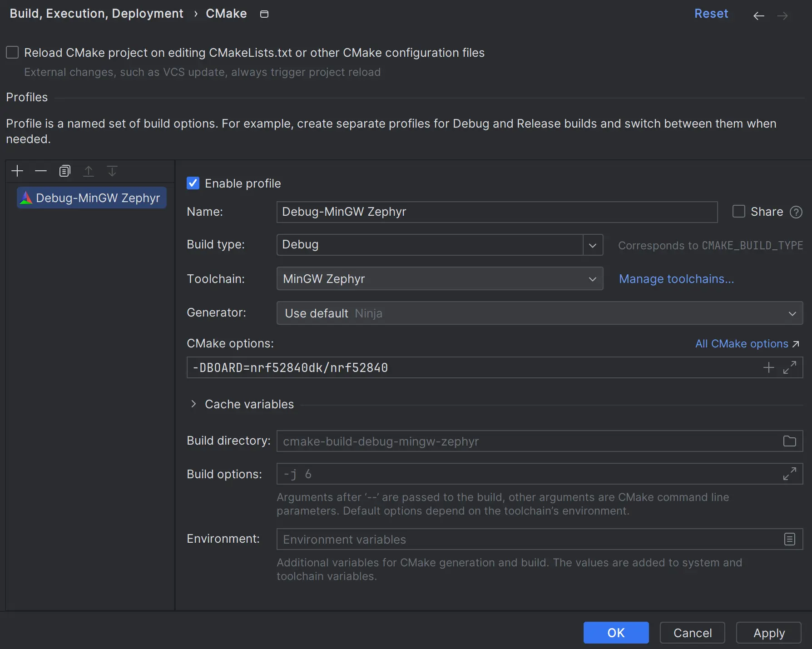
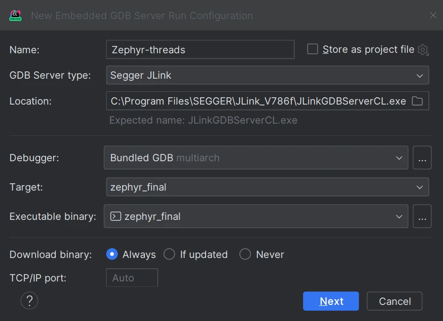

CLion
Note
This guide describes how to set up, build, and debug Zephyr’s sample application in CLion, using the IDE’s CMake integration. This approach is no longer optimal.
CLion now features native Zephyr West integration which provides an easier and more intuitive way to open, build, and run/debug Zephyr projects. This guide will be updated soon, but is still valid if you prefer to use CMake.
CLion is a cross-platform C/C++ IDE that supports multi-threaded RTOS debugging.
This guide describes the process of setting up, building, and debugging Zephyr’s Basic thread manipulation sample in CLion.
The instructions have been tested on Windows. In terms of the CLion workflow, the steps would be the same for macOS and Linux, but make sure to select the correct environment file and to adjust the paths.
Get CLion
Download CLion and install it.
Initialize a new workspace
This guide gives details on how to build and debug the Basic thread manipulation sample application, but the instructions would be similar for any Zephyr project and workspace layout.
Before you start, make sure you have a working Zephyr development environment, as per the instructions in the Getting Started Guide.
Open the project in CLion
In CLion, click Open on the Welcome screen or select from the main menu.
Navigate to your Zephyr workspace (i.e.the
zephyrprojectfolder in your HOME directory if you have followed the Getting Started instructions), then selectzephyr/samples/basic/threadsor another sample project folder.Click OK.
If prompted, click Trust Project.
See the Project security section in CLion web help for more information on project security.
Configure the toolchain and CMake profile
CLion will open the Open Project Wizard with the CMake profile settings. If that does not happen, go to .
Click Manage Toolchains next to the Toolchain field. This will open the Toolchain settings dialog.
We recommend that you use the Bundled MinGW toolchain with default settings on Windows, or the System (default) toolchain on Unix machines.
Click and select
..\.venv\Scripts\activate.bat.
Click Apply to save the changes.
Back in the CMake profile settings dialog, specify your board in the CMake options field. For example:
-DBOARD=nrf52840dk/nrf52840

Click Apply to save the changes.
CMake load should finish successfully.
{kind=link}
{kind=link}
Configure Zephyr parameters for debug
In the configuration switcher on the top right, select guiconfig and click the hammer icon.
Use the GUI application to set the following flags:
DEBUG_THREAD_INFO THREAD_RUNTIME_STATS DEBUG_OPTIMIZATIONS
Build the project
In the configuration switcher, select zephyr_final and click the hammer icon.
Note that other CMake targets like puncover or hardenconfig can also be called at this
point.
Enable RTOS integration
Go to .
Set the Enable RTOS Integration checkbox.
This option enables Zephyr tasks view during debugging. See Multi-threaded RTOS debug in CLion web help for more information.
You can leave the option set to Auto. CLion will detect Zephyr automatically.
Create an Embedded GDB Server configuration
In order to debug a Zephyr application in CLion, you need to create a run/debug configuration out of the Embedded GDB Server template.
Instructions below show the case of a Nordic Semiconductor board and a Segger J-Link debug probe. If your setup is different, make sure to adjust the configuration settings accordingly.
Select from the main menu.
Configure the settings:
Option
Value
Name (optional)
Zephyr-threads
GDB Server Type
Segger JLink
Location
The path to
JLinkGDBServerCL.exeon Windows or theJLinkGDBServerbinary on macOS/Linux.Debugger
Bundled GDB
Note
For non-ARM and non-x86 architectures, use a GDB executable from Zephyr SDK. Make sure to pick a version with Python support (for example, riscv64-zephyr-elf-gdb-py) and check that Python is present in the system
PATH.Target
zephyr-final
Executable binary
zephyr-final
Download binary
Always
TCP/IP port
Auto

Click Next to set the Segger J-Link parameters.
Click Create when ready.
{kind=link}
{kind=link}
Start debugging
Place breakpoints by clicking in the left gutter next to the code lines.
Make sure that Zephyr-threads is selected in the configuration switcher and click the bug icon or press Ctrl+D.
When a breakpoint is hit, CLion opens the Debug tool window.
Zephyr tasks are listed in the Threads & Variables pane. You can switch between them and inspect the variables for each task.
Refer to CLion web help for detailed description of the IDE debug capabilities.
{kind=link}